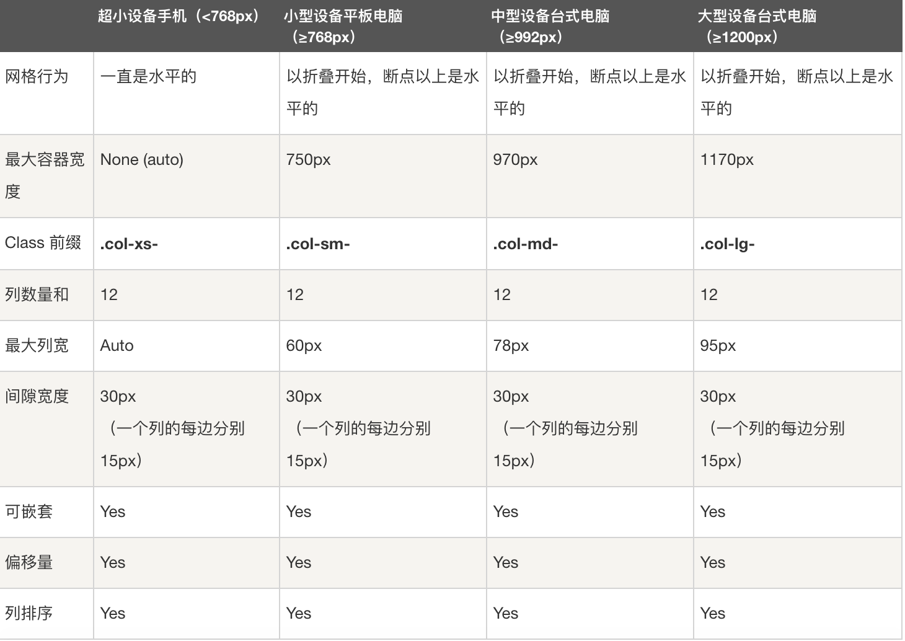
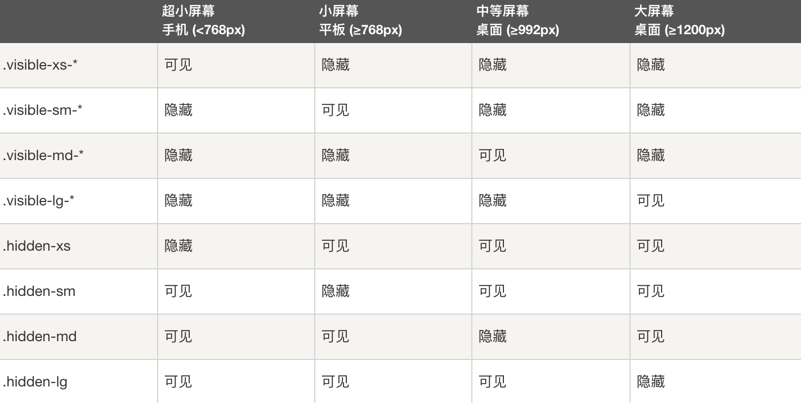
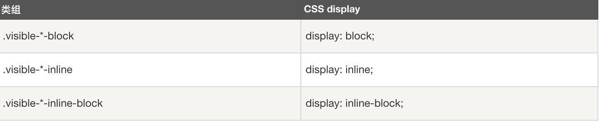
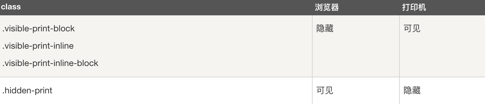
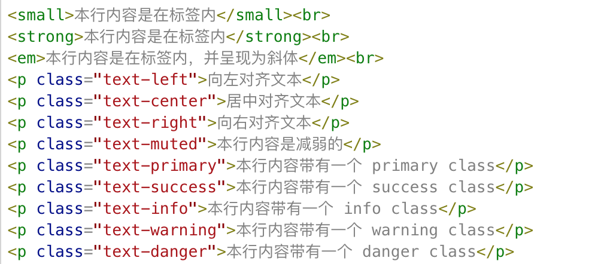

Bootstrap: 一个用于快速开发 Web 应用程序和网站的前端响应式框架
一. Bootstrap
1.移动设备优先：自 Bootstrap 3 起，框架包含了贯穿于整个库的移动设备优先的样式。
2.浏览器支持：所有的主流浏览器都支持 Bootstrap。
3.容易上手
4.响应式设计：Bootstrap 的响应式 CSS 能够自适应于台式机、平板电脑和手机
二. Bootstrap
Bootstrap学习网址
三. Bootstrap使用
源代码
插件
使用时, 将插件引入工程, 在html页面导入bootstrap.css与bootstrap.js
<link rel="stylesheet" href="../../Vendor/bootstrap-3.3.7-dist/css/bootstrap.css">
<script src="../../Vendor/bootstrap-3.3.7-dist/js/bootstrap.js"></script>
1.Bootstrap 使用了一些 HTML5 元素和 CSS 属性。为了让这些正常工作，您需要使用 HTML5 文档类型（Doctype）。 因此，请在使用 Bootstrap 项目的开头包含下面的代码段
<!DOCTYPE html>
<html>
....
<html>
2.Bootstrap 移动设备优先, 不需要引入另外一个对应移动设备的CSS
为了让 Bootstrap 开发的网站对移动设备友好，确保适当的绘制和触屏缩放，需要在网页的 head 之中添加 viewport meta 标签，如下所示：
<meta name="viewport" content="width=device-width,
initial-scale=1.0,
maximum-scale=1.0,
user-scalable=no">
width 属性控制设备的宽度。假设您的网站将被带有不同屏幕分辨率的设备浏览，那么将它设置为 device-width 可以确保它能正确呈现在不同设备上。
initial-scale=1.0 确保网页加载时，以 1:1 的比例呈现，不会有任何的缩放。
在移动设备浏览器上，通过为 viewport meta 标签添加 user-scalable=no 可以禁用其缩放（zooming）功能。
通常情况下，maximum-scale=1.0 与 user-scalable=no 一起使用。这样禁用缩放功能后，用户只能滚动屏幕，就能让您的网站看上去更像原生应用的感觉。
3.响应式图像
在下面的代码中，可以看到img-responsive class 为图像赋予了 max-width: 100%; 和 height: auto; 属性，可以让图像按比例缩放，不超过其父元素的尺寸。
.img-responsive {
display: block;
height: auto;
max-width: 100%;
}
这表明相关的图像呈现为 block。当您把元素的 display 属性设置为 block，以块级元素显示。
设置 height:auto，相关元素的高度取决于浏览器。
设置 max-width 为 100% 会重写任何通过 width 属性指定的宽度。这让图片对响应式布局的支持更友好。
如果需要让使用了 .img-responsive 类的图片水平居中，请使用 .center-block 类，不要用 .text-center。
4. Bootstrap 网格系统（Grid System）
Bootstrap 提供了一套响应式、移动设备优先的流式网格系统，随着屏幕或视口（viewport）尺寸的增加，系统会自动分为最多12列。
媒体查询是非常别致的"有条件的 CSS 规则"。它只适用于一些基于某些规定条件的 CSS。如果满足那些条件，则应用相应的样式。
Bootstrap 中的媒体查询允许您基于视口大小移动、显示并隐藏内容。下面的媒体查询在 LESS 文件中使用，用来创建 Bootstrap 网格系统中的关键的分界点阈值。
/* 超小设备（手机，小于 768px） */
/* Bootstrap 中默认情况下没有媒体查询 */
/* 小型设备（平板电脑，768px 起） */
@media (min-width: @screen-sm-min) { ... }
/* 中型设备（台式电脑，992px 起） */
@media (min-width: @screen-md-min) { ... }
/* 大型设备（大台式电脑，1200px 起） */
@media (min-width: @screen-lg-min) { ... }
//对于所有带有 min-width: @screen-sm-min 的设备，如果屏幕的宽度小于 @screen-sm-max，则会进行一些处理。
/* 我们有时候也会在媒体查询代码中包含 max-width，从而将 CSS 的影响限制在更小范围的屏幕大小之内 */
@media (min-width: @screen-sm-min) and (max-width: @screen-sm-max) { ... }
下表总结了 Bootstrap 网格系统如何跨多个设备工作：
在进行CSS布局的时候我们只需通过设置不同的col-*-*配合@medio媒体查询来进行.
Bootstrap也提供了响应式工具,减少了开发者需要重写媒体查询的负担,如下:
但同时,需要谨慎使用这些工具，避免在同一个站点创建完全不同的版本。响应式实用工具目前只适用于块和表切换。
不同设备:
block与inline:
打印:
偏移列
偏移是一个用于更专业的布局的有用功能。它们可用来给列腾出更多的空间。例如，.col-xs-* 类不支持偏移，但是它们可以简单地通过使用一个空的单元格来实现该效果。
为了在大屏幕显示器上使用偏移，请使用 .col-md-offset-* 类。这些类会把一个列的左外边距（margin）增加 * 列，其中 * 范围是从 1 到 11。
列排序
使用 .col-md-push-* 和 .col-md-pull-* 类的内置网格列的顺序，其中 * 范围是从 1 到 11。
其中.col-md-push-*表示向右移动*; .col-md-pull-*表示向左移动*;
<div class="row">
<div class="col-md-4 col-md-push-8" style="background-color: #dedef8; ">
之前在左边, col-md-push-8之后到了右边
</div>
<div class="col-md-8 col-md-pull-4" style="background-color: #dedef8; ">
之前在右边, col-md-pull-8之后到了左边
</div>
</div>
5. Bootstrap 排版
1.Bootstrap 中定义了所有的 HTML 标题（h1 到 h6）的样式。
2.内联子标题 <small>
3.引导主体副本 为了给段落添加强调文本，则可以添加 class="lead"，这将得到更大更粗、行高更高的文本.
4.强调类
5.缩写:<abbr>
6.地址 < address >
7.邮件
<a href="mailto:#">mailto@somedomain.com</a>
8. 引用
< blockquote class="pull-right" >
9. 列表
1.有序列表：有序列表是指以数字或其他有序字符开头的列表。
2.无序列表：无序列表是指没有特定顺序的列表，是以传统风格的着重号开头的列表。如果您不想显示这些着重号，您可以使用 class .list-unstyled 来移除样式。您也可以通过使用 class .list-inline 把所有的列表项放在同一行中。
3.定义列表：在这种类型的列表中，每个列表项可以包含 <dt> 和 <dd> 元素。<dt> 代表 定义术语，就像字典，这是被定义的属于（或短语）。接着，<dd> 是 <dt> 的描述。您可以使用 class dl-horizontal 把 <dl> 行中的属于与描述并排显示。
<h4>水平的定义列表</h4>
<dl class="dl-horizontal">
<dt>Description 1</dt>
<dd>Item 1</dd>
<dt>Description 2</dt>
<dd>Item 2</dd>
</dl>
6.代码
Bootstrap 允许两种方式显示代码:<code> <pre>
7.表格
.active 对某一特定的行或单元格应用悬停颜色
.success 表示一个成功的或积极的动作
.warning 表示一个需要注意的警告
.danger 表示一个危险的或潜在的负面动作
<table class="table">
<caption>基本的表格布局>/caption>
<thead>
<tr class="success">
<th>名称</th>
<th>城市</th>
</tr>
</thead>
<tbody>
<tr>
<td>Tanmay</td>
<td>Bangalore</td>
</tr>
<tr>
<td>Sachin</td>
<td>Mumbai</td>
</tr>
</tbody>
</table>
7.表单
基本的表单结构是 Bootstrap 自带的，个别的表单控件自动接收一些全局样式。下面列出了创建基本表单的步骤：
1.向父 <form> 元素添加 role="form"
2.把标签和控件放在一个带有 class .form-group 的 <div> 中。这是获取最佳间距所必需的
3.向所有的文本元素 <input>、<textarea> 和 <select> 添加 class ="form-control"
<form role="form">
<div class="form-group">
<label for="name">名称</label>
<input type="text" class="form-control" id="name" placeholder="请输入名称">
</div>
<div class="form-group">
<label for="inputfile">文件输入</label>
<input type="file" id="inputfile">
<p class="help-block">这里是块级帮助文本的实例。</p>
</div>
<div class="checkbox">
<label>
<input type="checkbox">请打勾
</label>
</div>
<button type="submit" class="btn btn-default">提交</button>
</form>
8.按钮
类型:btn btn-default, btn btn-primary, btn btn-success, btn btn-info, btn btn-warning,
btn btn-danger, btn btn-link
用法:
<button type="button" class="btn btn-default">默认按钮</button>
9.图片
.img-rounded：添加图片圆角。
.img-circle：整个图片变成圆形。
.img-thumbnail：一个灰色的边框。
用法:
<img src="/wp-content/uploads/2014/06/download.png" class="img-rounded">